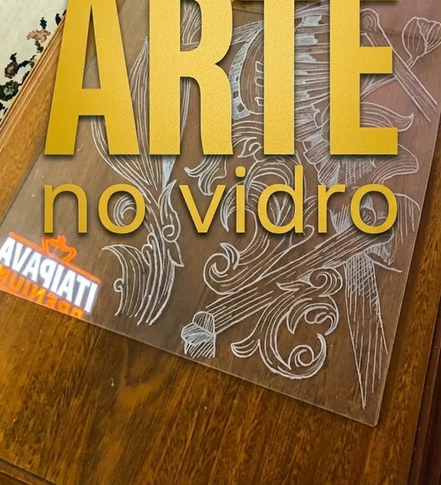
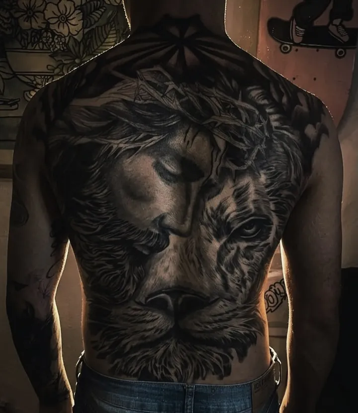
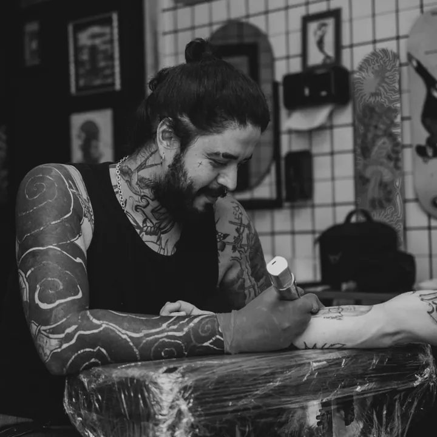
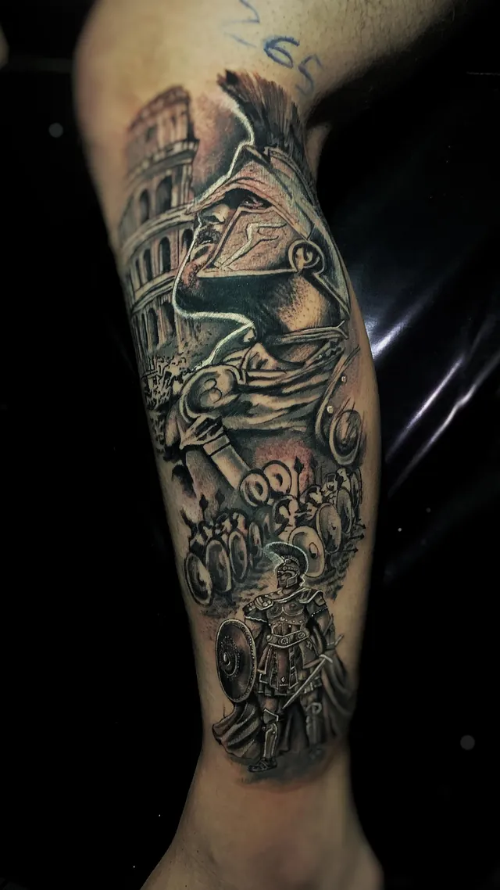
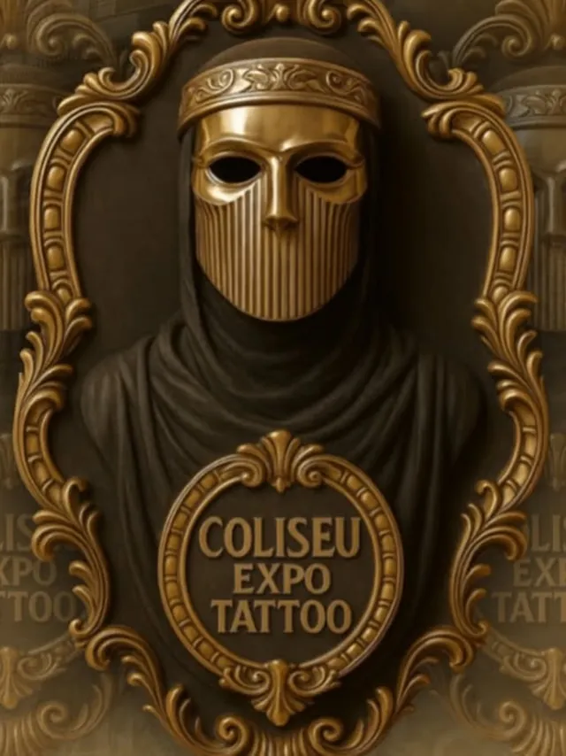
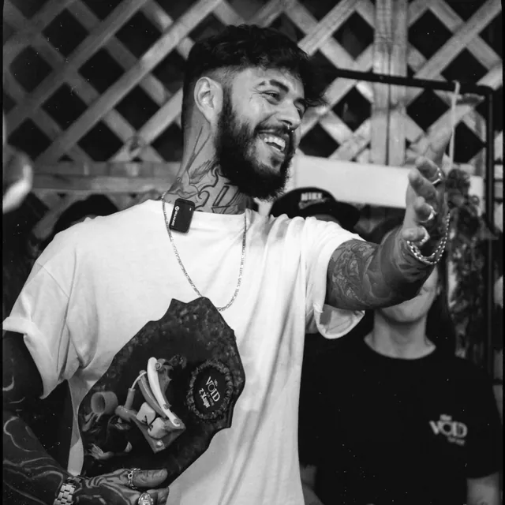
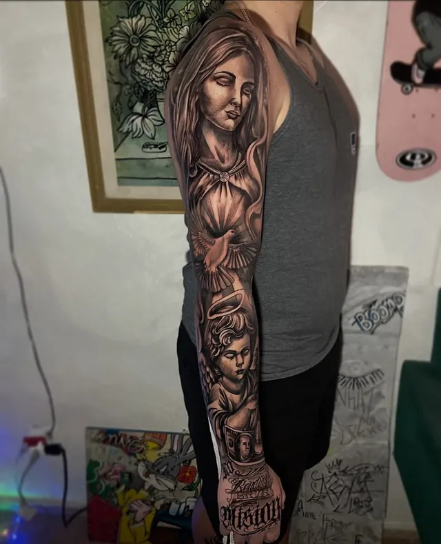
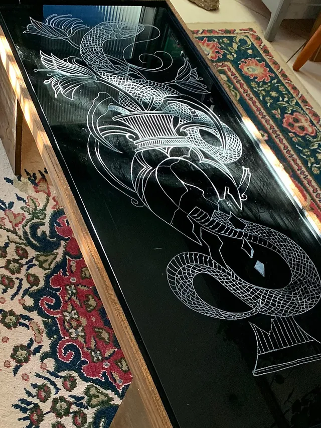
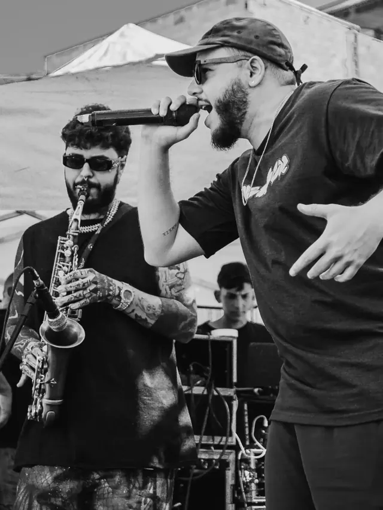
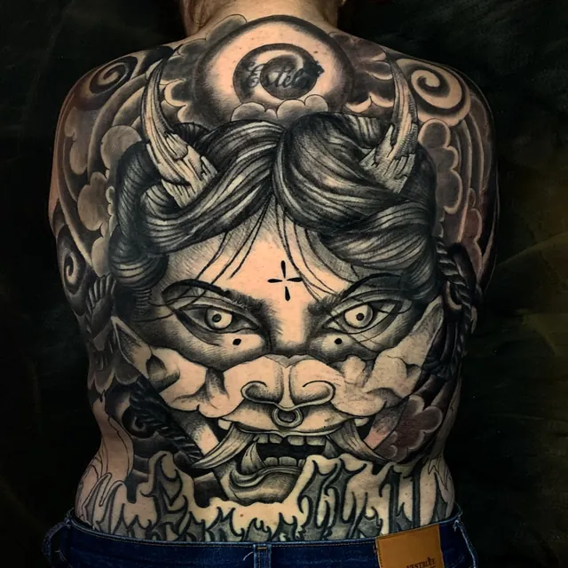

Gravura no vidro
Desenho gravado à mão em vidro, espelho e tampo de mesa. Peça única, sob encomenda.
Tratar pelo WhatsApp →
Tatuador premiado, especializado em preto e cinza e blackwork, com estúdio no Bom Retiro. Atendimento com hora marcada.

Na primeira convenção em que entrou para competir, Fernando levou o terceiro lugar na categoria tema do evento.


Foram nove horas de sessão. O desenho nasceu para o tema da Coliseu Expo Tattoo, e a tela foi o parceiro Yan Muzy, que topou a ideia do começo ao fim. Durante a execução, o tatuador Igu ajudou a clarear as escolhas de sombra e contraste. No fim do dia, o resultado subiu ao pódio: terceiro lugar na categoria tema do evento.
Para quem acompanha o trabalho de Fernando, o prêmio não surpreende. Ele tatua há mais de dez anos, passou por estúdios conceituados de São Paulo e construiu o nome no preto e cinza: sombra lisa, textura de pele de animal, retratos, anjos, leões e fechamentos inteiros de braço, perna e costas.
“Me sinto honrado em participar e conseguir um prêmio na minha primeira convenção.”Fernando Fernandes, no Instagram
Cada projeto parte de uma conversa. O cliente traz a referência, Fernando desenha uma peça exclusiva que acompanha a anatomia do corpo e funciona de longe e de perto, e que continua forte com o passar dos anos. Muita coisa sai no freehand, desenhada direto na pele antes da primeira agulha.
Além de competir, ele também já esteve do outro lado da mesa, entregando prêmio em vez de receber. E divide o que sabe: dá mentoria particular para tatuadores, com foco em sombra lisa e textura, e turmas de preto e cinza.

Do outro lado
Antes do pódio, Fernando já tinha subido ao palco para entregar troféu a outros artistas. Hoje ele circula pelos dois lados: convenções, eventos, aulas e a rotina do estúdio, com agenda aberta mês a mês.
Ver o portfólioTrabalhos recentes, do jeito que saíram do estúdio. Toque numa foto para ver em tela cheia.
Fernando fala sobre preto e cinza, coberturas e o que acontece entre a primeira mensagem e a última sessão.
Vai passar 6, 8 ou até 10 horas na maca? Uma sessão longa não precisa ser uma experiência ruim. Guarde esta página para o dia.
Não chegue achando que são 2 horas e descubra que são 8. Saber a duração ajuda a cabeça a se preparar.
O estúdio pode estar gelado e você fica horas parado. Ficar aquecido faz muita diferença.
A cada 45 minutos ou 1 hora, levante, estique o corpo, tome água, vá ao banheiro.
Uma boa refeição antes ou no intervalo recupera a energia e deixa a experiência mais leve.
Almofada, travesseiro, apoio, ajuste da maca. Uma posição ruim dói mais que a própria tatuagem.
Filme, série, podcast, música. Qualquer coisa que tire o “será que ainda falta muito?”.
Banheiro, água, mudar de posição, respirar. Não existe prêmio para quem sofre mais.
Sessão longa bem conduzida é trabalho de dupla, entre tatuador e cliente.
Marcar a minha
Fechamento unilateral completo
Projeto exclusivo e fluido, acompanhando a anatomia do pulso até o ombro, com presença e leitura limpa. Uma sessão intensiva.
R$1.300
Valor de campanha. Confirme a agenda pelo WhatsApp.
Quero fechar o braçoRealismo, religioso, retrato, animais, ornamental e escrita. Você traz a ideia, o desenho é feito para o seu corpo.
Neutralização com preto puro, depois cinzas e brancos. Antes e depois de verdade, sem filtro.
Mentoria particular para tatuadores, prática de sombra lisa e textura, e turmas de preto e cinza.
Mesa, quadro, gravura no vidro, um som no saxofone. Se é arte, dá para encomendar.

Desenho gravado à mão em vidro, espelho e tampo de mesa. Peça única, sob encomenda.
Tratar pelo WhatsApp →
Madeira cortada, parafusada e envernizada à mão, com gravura no vidro. A mesa do Sutura Ink saiu daqui.
Tratar pelo WhatsApp →
No saxofone com o Insanatório. O single “Anti-Herói” saiu pela Relicário Rec. em março.
@insanatorio_ →
Desenhos prontos para braço, perna e costas, com condição especial para quem reservar.
Pedir as artes →O g1 contou a história do pedido de casamento que Fernando tatuou no peito de um jovem que venceu o câncer, no lugar onde antes ficava o cateter.
Ler a matériaTattoo excelente e preço muito em conta, pode contar com o cara que ele manja muito.
Minha primeira tatuagem foi com ele, gostei bastante, um excelente profissional.
O melhor estúdio, o melhor tatuador, com uma localização excelente.